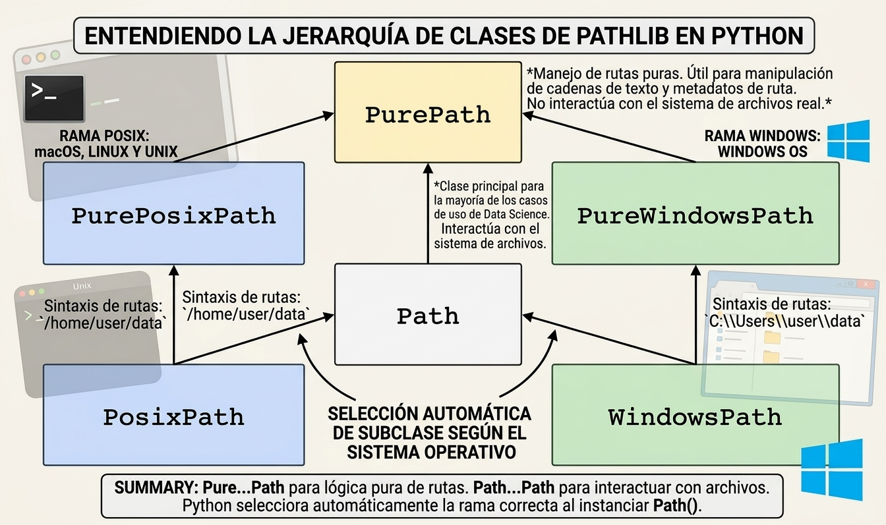
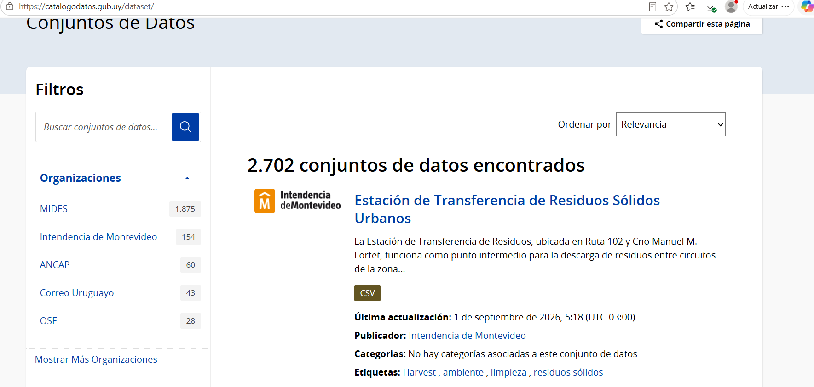

[1] "C:/Users/jodavyt/Documents/GitHub/Introduccion-a-la-ciencia-de-datos/clases/clase4"data/raw/ (datos originales e inmutables)
data/processed/ (limpios)
notebooks/ o src/ o scripts (código)
outputs/ o resultados (reportes y modelos)
[1] "C:/Users/jodavyt/Documents/GitHub/Introduccion-a-la-ciencia-de-datos/clases/clase4"Antes, si estas trabajando dentro de RStudio ejecuta (dentro de VS no es necesario)
En python permite trabajar con rutas absolutas y relativas:
Usar con paquetes para trabajar desde la raíz del proyecto y sus subcarpetas.

Fuente: Catalogo de datos abiertor Uy

library(here)
library(readr)
# 1. Construir la ruta relativa hacia el archivo CSV
# Estructura esperada: tu_proyecto/data/raw/datos.csv
archivo <- "cantidad_de_residuos_en_la_estacion_de_transferencia_2023.csv"
ruta_csv <- here("clases", "clase4", archivo)
# 2. Verificar que el archivo exista
if (!file.exists(ruta_csv)) {
stop(paste("No se encontró el archivo en:", ruta_csv))
}
# 3. Cargar el archivo CSV
df <- read_csv(ruta_csv)
# 4. Inspección inicial de los datos
cat("--- Archivo cargado exitosamente desde:", basename(ruta_csv), "---\n")--- Archivo cargado exitosamente desde: cantidad_de_residuos_en_la_estacion_de_transferencia_2023.csv ---cols(
pesada = col_double(),
fecha_dia = col_character(),
fecha = col_character(),
matricula_letra = col_character(),
tipo_residuo = col_double(),
tipo_residuo_desc = col_character(),
subtipo_residuo = col_double(),
subtipo_residuo_desc = col_character(),
peso_neto = col_double(),
peso_bruto = col_double(),
tara = col_double(),
balanza = col_double(),
medio_transp = col_double(),
medio_transp_desc = col_character(),
trayecto = col_logical(),
trayecto_desc = col_logical(),
tipo_recorrido = col_logical(),
tipo_recorrido_desc = col_logical(),
tipo_volcado_desc = col_character(),
nomenclatura_circuito = col_logical(),
municipio = col_logical(),
lugar_salida = col_logical(),
lugar_salida_desc = col_logical(),
permiso = col_logical(),
nro_permiso = col_double(),
permiso_id = col_double(),
tipo_permiso = col_double(),
tipo_permiso_desc = col_character(),
peso_autorizado = col_logical(),
destino_volcado = col_double(),
destino_volcado_desc = col_character(),
tipo_pesada = col_double(),
tipo_pesada_desc = col_character(),
basura_propia = col_character(),
fmod = col_character(),
viaje_fecha = col_character(),
fecha_tara = col_character(),
sitio = col_double(),
sitio_desc = col_character(),
tipo_movimiento = col_double(),
tipo_movimiento_desc = col_character()
)# A tibble: 6 × 41
pesada fecha_dia fecha matricula_letra tipo_residuo tipo_residuo_desc
<dbl> <chr> <chr> <chr> <dbl> <chr>
1 3996241 30/11/23 00:00 30/11/2… SIM 1 TIPO DOMICILIARIO
2 3996243 30/11/23 00:00 30/11/2… SIM 1 TIPO DOMICILIARIO
3 3996253 30/11/23 00:00 30/11/2… SIM 1 TIPO DOMICILIARIO
4 3996276 30/11/23 00:00 30/11/2… SIM 1 TIPO DOMICILIARIO
5 3996298 30/11/23 00:00 30/11/2… SIM 1 TIPO DOMICILIARIO
6 3996303 30/11/23 00:00 30/11/2… SIM 1 TIPO DOMICILIARIO
# ℹ 35 more variables: subtipo_residuo <dbl>, subtipo_residuo_desc <chr>,
# peso_neto <dbl>, peso_bruto <dbl>, tara <dbl>, balanza <dbl>,
# medio_transp <dbl>, medio_transp_desc <chr>, trayecto <lgl>,
# trayecto_desc <lgl>, tipo_recorrido <lgl>, tipo_recorrido_desc <lgl>,
# tipo_volcado_desc <chr>, nomenclatura_circuito <lgl>, municipio <lgl>,
# lugar_salida <lgl>, lugar_salida_desc <lgl>, permiso <lgl>,
# nro_permiso <dbl>, permiso_id <dbl>, tipo_permiso <dbl>, …from pathlib import Path
import pandas as pd
# 0. nombre archivo
archivo = "cantidad_de_residuos_en_la_estacion_de_transferencia_2023.csv"
# 1. Definir la ruta raíz del proyecto o del directorio de trabajo actual
BASE_DIR = Path.cwd()
# 2. Construir la ruta relativa de forma segura utilizando el operador /
# Estructura esperada: tu_proyecto/data/raw/datos.csv
ruta_csv = BASE_DIR / "clases" / "clase4" / archivo
# 3. Verificar que el archivo realmente existe antes de cargarlo
if not ruta_csv.exists():
raise FileNotFoundError(f"No se encontró el archivo en: {ruta_csv}")
# 4. Cargar el archivo CSV
df = pd.read_csv(ruta_csv)
# 5. Inspección inicial de los datos
print(f"--- Archivo cargado exitosamente desde: {ruta_csv.name} ---")
print(df.info())
print("\nPrimeras 5 filas:")
print(df.head())Actividades esenciales:
match_id, player_id, kills, deaths, win_bool.player_idapp_id, title, genre, price, peak_concurrent_users.spc_tbl_ [1,222 × 41] (S3: spec_tbl_df/tbl_df/tbl/data.frame)
$ pesada : num [1:1222] 4e+06 4e+06 4e+06 4e+06 4e+06 ...
$ fecha_dia : chr [1:1222] "30/11/23 00:00" "30/11/23 00:00" "30/11/23 00:00" "30/11/23 00:00" ...
$ fecha : chr [1:1222] "30/11/23 08:28" "30/11/23 08:30" "30/11/23 08:36" "30/11/23 08:56" ...
$ matricula_letra : chr [1:1222] "SIM" "SIM" "SIM" "SIM" ...
$ tipo_residuo : num [1:1222] 1 1 1 1 1 1 1 1 1 1 ...
$ tipo_residuo_desc : chr [1:1222] "TIPO DOMICILIARIO" "TIPO DOMICILIARIO" "TIPO DOMICILIARIO" "TIPO DOMICILIARIO" ...
$ subtipo_residuo : num [1:1222] 1 1 1 1 1 1 1 1 1 1 ...
$ subtipo_residuo_desc : chr [1:1222] "ASIMILABLE A DOMICILIARIO" "ASIMILABLE A DOMICILIARIO" "ASIMILABLE A DOMICILIARIO" "ASIMILABLE A DOMICILIARIO" ...
$ peso_neto : num [1:1222] 11590 8660 6090 7920 9740 ...
$ peso_bruto : num [1:1222] 28450 26070 25020 24720 26890 ...
$ tara : num [1:1222] 16860 17410 18930 16800 17150 ...
$ balanza : num [1:1222] 5 5 5 5 5 5 5 5 5 5 ...
$ medio_transp : num [1:1222] 1 1 50 1 1 50 1 1 1 50 ...
$ medio_transp_desc : chr [1:1222] "COMPACTADOR LEVANTE LAT." "COMPACTADOR LEVANTE LAT." "COMPACTADOR LAT.CAJA DESM" "COMPACTADOR LEVANTE LAT." ...
$ trayecto : logi [1:1222] NA NA NA NA NA NA ...
$ trayecto_desc : logi [1:1222] NA NA NA NA NA NA ...
$ tipo_recorrido : logi [1:1222] NA NA NA NA NA NA ...
$ tipo_recorrido_desc : logi [1:1222] NA NA NA NA NA NA ...
$ tipo_volcado_desc : chr [1:1222] "SIN PERMISO" "SIN PERMISO" "SIN PERMISO" "SIN PERMISO" ...
$ nomenclatura_circuito: logi [1:1222] NA NA NA NA NA NA ...
$ municipio : logi [1:1222] NA NA NA NA NA NA ...
$ lugar_salida : logi [1:1222] NA NA NA NA NA NA ...
$ lugar_salida_desc : logi [1:1222] NA NA NA NA NA NA ...
$ permiso : logi [1:1222] NA NA NA NA NA NA ...
$ nro_permiso : num [1:1222] NA NA NA NA NA NA NA NA NA NA ...
$ permiso_id : num [1:1222] NA NA NA NA NA NA NA NA NA NA ...
$ tipo_permiso : num [1:1222] NA NA NA NA NA NA NA NA NA NA ...
$ tipo_permiso_desc : chr [1:1222] NA NA NA NA ...
$ peso_autorizado : logi [1:1222] NA NA NA NA NA NA ...
$ destino_volcado : num [1:1222] 34 34 34 34 34 34 34 34 34 34 ...
$ destino_volcado_desc : chr [1:1222] "ETRA (Estacion de Transferencia)" "ETRA (Estacion de Transferencia)" "ETRA (Estacion de Transferencia)" "ETRA (Estacion de Transferencia)" ...
$ tipo_pesada : num [1:1222] 1 1 1 1 1 1 1 1 1 1 ...
$ tipo_pesada_desc : chr [1:1222] "AUTOMATICA" "AUTOMATICA" "AUTOMATICA" "AUTOMATICA" ...
$ basura_propia : chr [1:1222] "NO" "NO" "NO" "NO" ...
$ fmod : chr [1:1222] "16/01/24 10:41" "16/01/24 10:41" "16/01/24 10:41" "16/01/24 10:41" ...
$ viaje_fecha : chr [1:1222] "29/11/23 00:00" "29/11/23 00:00" "30/11/23 00:00" "30/11/23 00:00" ...
$ fecha_tara : chr [1:1222] "30/11/23 08:39" "30/11/23 08:40" "30/11/23 08:53" "30/11/23 09:15" ...
$ sitio : num [1:1222] 2 2 2 2 2 2 2 2 2 2 ...
$ sitio_desc : chr [1:1222] "ETRA" "ETRA" "ETRA" "ETRA" ...
$ tipo_movimiento : num [1:1222] 1 1 1 1 1 1 1 1 1 1 ...
$ tipo_movimiento_desc : chr [1:1222] "DESCARGA" "DESCARGA" "DESCARGA" "DESCARGA" ...
- attr(*, "spec")=
.. cols(
.. pesada = col_double(),
.. fecha_dia = col_character(),
.. fecha = col_character(),
.. matricula_letra = col_character(),
.. tipo_residuo = col_double(),
.. tipo_residuo_desc = col_character(),
.. subtipo_residuo = col_double(),
.. subtipo_residuo_desc = col_character(),
.. peso_neto = col_double(),
.. peso_bruto = col_double(),
.. tara = col_double(),
.. balanza = col_double(),
.. medio_transp = col_double(),
.. medio_transp_desc = col_character(),
.. trayecto = col_logical(),
.. trayecto_desc = col_logical(),
.. tipo_recorrido = col_logical(),
.. tipo_recorrido_desc = col_logical(),
.. tipo_volcado_desc = col_character(),
.. nomenclatura_circuito = col_logical(),
.. municipio = col_logical(),
.. lugar_salida = col_logical(),
.. lugar_salida_desc = col_logical(),
.. permiso = col_logical(),
.. nro_permiso = col_double(),
.. permiso_id = col_double(),
.. tipo_permiso = col_double(),
.. tipo_permiso_desc = col_character(),
.. peso_autorizado = col_logical(),
.. destino_volcado = col_double(),
.. destino_volcado_desc = col_character(),
.. tipo_pesada = col_double(),
.. tipo_pesada_desc = col_character(),
.. basura_propia = col_character(),
.. fmod = col_character(),
.. viaje_fecha = col_character(),
.. fecha_tara = col_character(),
.. sitio = col_double(),
.. sitio_desc = col_character(),
.. tipo_movimiento = col_double(),
.. tipo_movimiento_desc = col_character()
.. )
- attr(*, "problems")=<pointer: 0x000002b2840f6860> [1] 12import pandas as pd
# 1. Dimensiones y estructura de los datos (Equivalente a str(df))
df.info()
# Nota: df.shape te da exactamente las dimensiones (filas, columnas) -> (1222, 41)
# 2. Filas únicas: detectando la columna que contiene el ID (Equivalente a length(unique(...)))
df["matricula_letra"].nunique() pesada fecha_dia fecha
0 0 0
matricula_letra tipo_residuo tipo_residuo_desc
0 0 0
subtipo_residuo subtipo_residuo_desc peso_neto
0 0 0
peso_bruto tara balanza
0 0 0
medio_transp medio_transp_desc trayecto
0 0 1222
trayecto_desc tipo_recorrido tipo_recorrido_desc
1222 1222 1222
tipo_volcado_desc nomenclatura_circuito municipio
0 1222 1222
lugar_salida lugar_salida_desc permiso
1222 1222 1222
nro_permiso permiso_id tipo_permiso
828 828 828
tipo_permiso_desc peso_autorizado destino_volcado
828 1222 0
destino_volcado_desc tipo_pesada tipo_pesada_desc
0 0 0
basura_propia fmod viaje_fecha
0 0 437
fecha_tara sitio sitio_desc
0 0 0
tipo_movimiento tipo_movimiento_desc
0 0 pesada fecha_dia fecha
0 0 0
matricula_letra tipo_residuo tipo_residuo_desc
0 0 0
subtipo_residuo subtipo_residuo_desc peso_neto
0 0 0
peso_bruto tara balanza
0 0 0
medio_transp medio_transp_desc trayecto
0 0 0
trayecto_desc tipo_recorrido tipo_recorrido_desc
0 0 0
tipo_volcado_desc nomenclatura_circuito municipio
0 0 0
lugar_salida lugar_salida_desc permiso
0 0 0
nro_permiso permiso_id tipo_permiso
0 0 0
tipo_permiso_desc peso_autorizado destino_volcado
0 0 0
destino_volcado_desc tipo_pesada tipo_pesada_desc
0 0 0
basura_propia fmod viaje_fecha
0 0 0
fecha_tara sitio sitio_desc
0 0 0
tipo_movimiento tipo_movimiento_desc
0 0